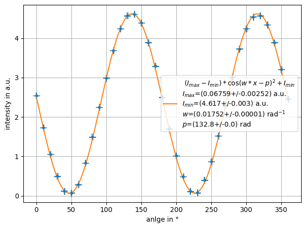

Custom fit function¶
[1]:
import numpy as np
from smpl import plot
from smpl import io
from smpl import functions as f
import uncertainties.unumpy as unp
import smpl
smpl.__version__
[1]:
'1.2.1.10'
[2]:
data = data_malus = np.loadtxt(io.find_file("test_custom_data.csv",3),skiprows = 1, delimiter=',')
ydata = unp.uarray(data[:,0],data[:,1])
xdata = unp.uarray(data[:,2],data[:,3])
plot.data(xdata,ydata)

Initial guess¶
params allows to set initial guess values for fitting.
[3]:
def Malus(x,I_max,I_min,w,p):
''' $(I_{max}-I_{min})*\\cos(w*x-p)^2+I_{min} $'''
return (I_max-I_min)*unp.cos(w*x-p)**2+I_min
plot.fit((xdata),ydata,Malus,xaxis="anlge in °", yaxis="intensity in a.u.", params=[4.6,0.11,0.0175,180+90-137], units=["a.u.","a.u.","rad$^{-1}$","rad"])
[3]:
[0.06758924227399325+/-0.002521848749707985,
4.6169371381758415+/-0.0028003801503449946,
0.017517668879176208+/-1.1151508922762687e-05,
132.77077908743433+/-0.0023481767965103846]

[ ]: